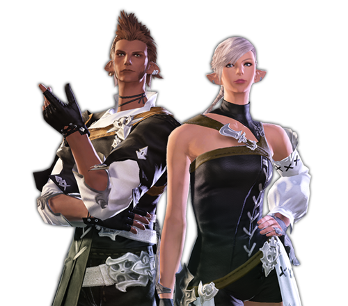
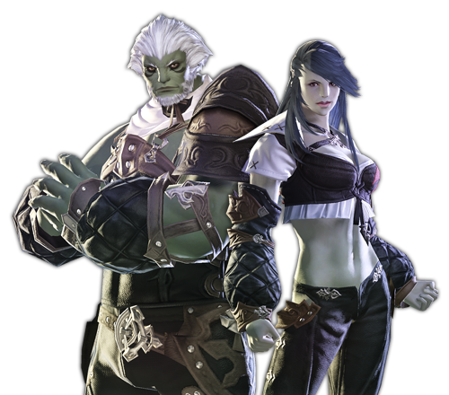

RACES
HYUR
An ethnic group of ordinary build and representative of Eorzea.
In the distant past, the population was not very large, but after three major ethnic movements, it became the largest population in Eorzea.
Even if they are of the same ethnic group, their sense of ethnicity is extremely rare, perhaps due to their diverse origins,
and they have a strong temperament that values individual freedom.
-
- Midlanders
- A large tribe that accounts for a majority of the many HYURs. Although it is called the "Midlanders" because many people settled in the lowlands, they are from various countries. Jobs vary and can be found in any city in Eorzea.
-
- Highlanders
- Huron tribe that ruled the highlands of Guinea. It is characterized by its large and sturdy body compared to the Jungwon tribe. Many people lost their hometowns and became refugees when the fortress city "Alamigo" collapsed, and gathered in the trading city "Ul’dah"
MIQO'TE
An ethnic group with large protruding ears and a soft tail. It is a minority satisfaction in Eorzea, a descendant of the hunter-gatherers who crossed the frozen sea in search of prey during the Great Ice and Snow Age of the Fifth Disaster. Because there is a strong sense of territory among ethnic groups, many people live alone in the city. In particular, Mikode men tend to be reluctant to contact others.
-

- Seekers of Sun
- Calls himself "Those who hold to the sun" them for lack of sun god while consoling Stephanus's many Catholics.Eoreujea in population "Limsa Lominsa", but there are few, if you look at the whole of a certain number of other peoples live with. Or even akin own to live together in a secluded area like the desert sagolli.
-
- Keepers of Moon
- There are many believers of Menefina, the god of the moon, who refer to themselves as "Moon Protectors of the Moon." They make a living hunting in the Black Curtain Forest, but have long quarreled with the people of "Gridania" who consider them poachers. However, with the recent moves to reconcile with each other, there have also been people who settle in the city.
ELEZEN
A nation characterized by being tall, thin, and long limbs. He is an indigenous man who previously held a dominant position in Eorzea, and has a very strong national pride. At one time, they fought heavily with Huron, who had been brought in on a large scale, but now they accept each other and live together helping each other. One of the features is that it has a slightly longer life span than Huron.
-

- Foresters
- A tribe that has long used forested areas, including the Black Curtain Forest, as a place of life. Many of them live in the city-states "Ishgard" and "Gridania" that participated in the founding. They like order and value discipline, but sometimes they feel inflexible and arrogant in the eyes of other peoples.
-
- Shaders
- A tribe that has lived in a murky hermitage in woodland for hundreds of years. When "Gridania" was established, it was a descendant of those who continued their traditional cave life after splitting from the majority forested. There are still many people who don't like being tied down somewhere and still want to distance themselves from the city-state.
ROEGADYN
A race of large, hard bones and muscles. A descendant of the maritime peoples who had swept the northern seas earlier, most of their ancestors came to Eorzea on a long-ship. There is a custom of showing off each other's bravery, so it is easy to be seen savagely in the eyes of other peoples, but it is famous for being affectionate and loyal to the end, and has produced many historically great fighters.
-

- Deewolfe
- A tribe well known for its fear of 'sea wolf pirates' coming from the northern sea. Many people become sailors or marines due to the major shortage that forms the marine city "Limsa Lominsa" It is named in the ancient Lugadine language in accordance with the tradition of generations.
-
- Lohengarde
- A minority tribe located in the northern Avalasia Mountains. Since there have been many mercenaries since ancient times, they have used names in the official language of Eorzea instead of their real names so that others can easily memorize them. Even now, you can find them working as gladiators and bodyguards in "Ul’dah".
LALAFALL
Small people with round bodies. Among the major ethnic groups, it is said that it is difficult to tell the age of other ethnic groups, especially because they are small and look young. Their ancestors lived and farmed on the southern sea island, and came to Eorzea through trade activities. He actively interacts with other ethnic groups and gets along with all ethnic groups.
-
- Plainsfolk
- A tribe that came out to the plains suitable for farming, such as in Lanosia. Many people are engaged in agriculture, but many are engaged in shipping and fishing based on the marine city of "Limsa Lominsa" It is generally known for its laid back and bold personality.
-
- Dunesfolk
- Tribes out into desolate desert areas like the Danalan region. It established the commercial city "Ul’dah" and is also famous for its natural character as a businessman. It is a practical personality that takes action as soon as a good idea comes up, and does not miss the opportunity to make money when doing business.
AU RA
An ethnic group rooted in Othard in the far east. Parts of the skin harden like scales to draw beautiful patterns. The horns on the side of the head are their pride and the organization that feels hearing and space. Men are known to be large and large, while women are known to have a small and flexible figure, which is why they differ in appearance by gender.
-
- Au Ra · Raen
- Lack of white scales are a brilliant aura.In the founder of the 'the father of dawn' founder of the clans, who appears in the mythology is a hallmark of calm and quiet, and who did inherit the great patience and love. I was born in King the edge of the zone still in, but recently discovered eoreuje from Gibeah came.
-
- Au Ra · Xaela
- Aura tribe with black scales shining in the dark. It is said to have inherited the characteristics of the "mother of the twilight," the founder of the clan in their myth of creation, and she loves nothing and bravery and has a strong temperament. They are also known as wandering peoples who live in small families.
HROTHGAR
A nation from the continent of Ilsabad. With well-developed muscles, sharp nails and tusks, it is reminiscent of lions or leopards. Because of their appearance, they were treated as barbarians in ancient times and continued to fight with other tribes, but as the official language spread, they understood each other and gradually increased exchanges. The birth rate of men and women is extremely skewed, so few women can be seen.
-
- Helions
- Rosgar tribe with complexion skin. She lives mainly in the Bozya region of southern Ilsabad. There is no word for tribe in their own language, but many men are called "hearting stars" in the official language, comparing the social structure of acting around a single female leader to a comet revolving around the sun.
-
- The Lost
- Rosgar tribe with one color skin. A long time ago, I abandoned settlement and started wandering. They are free to change their jobs depending on the time, such as seasonal workers who work hard, mercenaries who work hard, or peddlers. This way of life is compared to the comet that left the sun and is called the "diverting star".
VIERA
It is an ethnic minority of the Osadic subcontinent, and its name means "resident of the forest". Since ancient times, he has lived deep in the forest in his own communities, and has rarely appeared in other tribes' lifestyles as recently. In particular, it is rare for an adult male to be seen due to the practice of wandering alone. Its appearance is close to Huron or Elygen, but its ears are greatly developed.
-
- Rava
- Vieira tribe with brown skin close to dark forest shadows. Self-proclaimed "guardians of the forest" protecting the Holy Land of Golmore, the mountain is mercilessly punished by spears and bows for those who enter without permission. Although autonomy has been recognized under the former Kingdom of Dalmasca, some of them seem to have entered the outside world.
-
- Veena
- Vieira tribe with white skin like snow covering mountains. Based on the mountainside south of the Scattei Mountains, it is still hunting without contact with the outside world. In recent years, some have abandoned their old lifestyles and gone down the mountain, while others have traveled to Eorzea due to the aftermath of the war.